1. 整体流程介绍
Kaggle 将代码、数据和运行结果放在同一个网页工作区中。后续实践会用它运行 Python、读取项目数据并查看图像和指标。准备环境的主要工作，是让浏览器能够稳定访问平台，并创建一个可以保存代码的个人账户。
打开 Kaggle 首页。准备过程依次为网络连接、账户注册、创建 Notebook 和选择计算设备。Notebook 是由代码块、说明文字和运行结果组成的交互式笔记本。
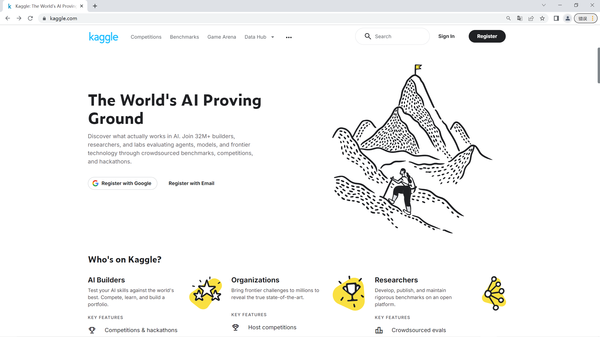
已有可用网络连接的同学，可以直接阅读第 4 节。没有 Google 账户也可以用邮箱注册 Kaggle；第 3 节介绍两种账户方式。
本页操作截图来自配套《环境准备》文档，保留其中的菜单位置与标注；截图中的日期、价格和账户信息为当时的演示内容。点击图片可查看原尺寸。
2. 获取海外网络访问条件
Kaggle 页面、登录服务和人机验证可能使用不同的网络资源。首页能打开，但注册验证一直无法加载时，通常还需要检查网络连接。原教程使用“宝可梦免费加速”演示代理客户端的配置；已有稳定连接的同学可以继续使用现有工具。
注册与领取套餐
打开宝可梦免费加速，点击“注册账户”，填写自己的邮箱、验证码和密码。注册后登录服务主页。
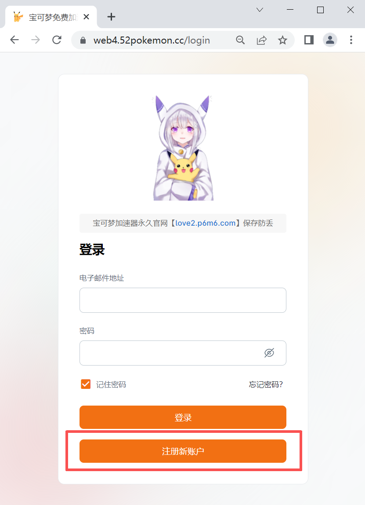
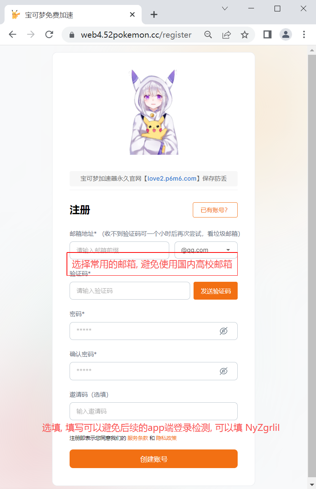
在“购买订阅”中打开入门套餐，选择月付选项，在优惠码栏填写兑换码并应用。示例中的月付金额会被优惠抵扣为 0 元；核对订单金额后再提交。
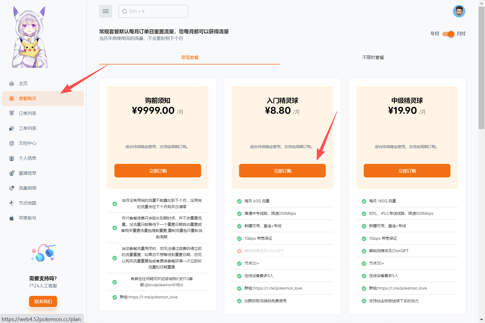
2026年10月兑换码：赫拉克罗斯。在优惠码栏填写“赫拉克罗斯”并点击应用。下图的“小火马”为历史截图中的兑换码，操作时使用上方的当月兑换码。
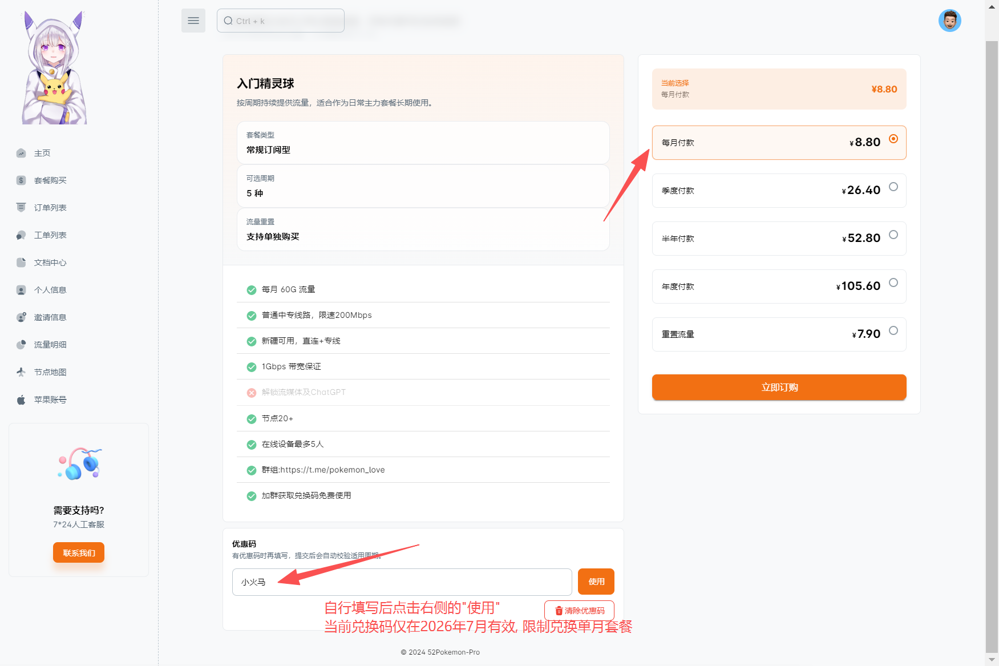
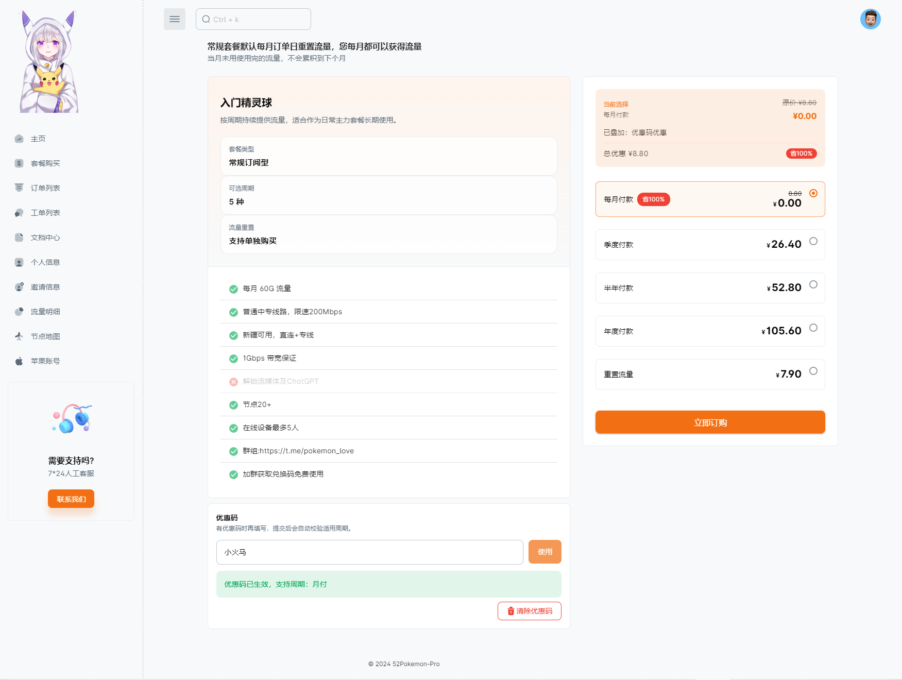
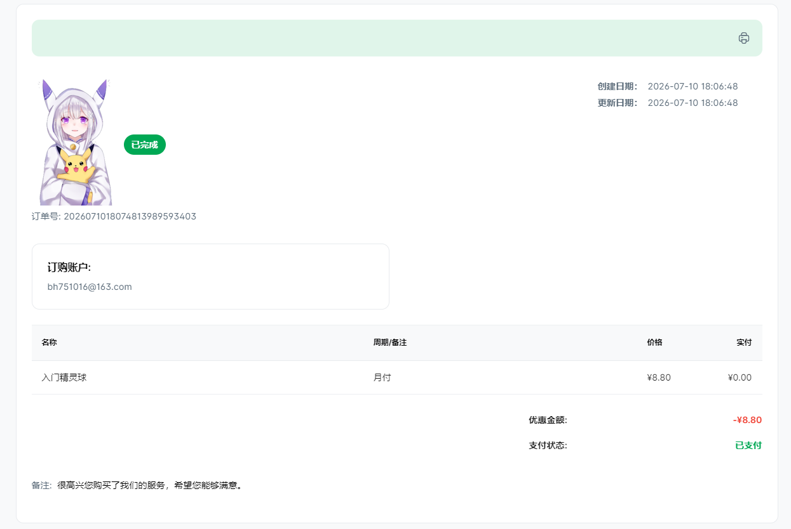
下载与安装客户端
返回服务主页，在下载区域选择与电脑、平板或手机系统对应的客户端。Windows、macOS、Android 和 iOS 使用不同安装方式；鸿蒙、Linux 等系统可在“文档中心”查看相应说明。
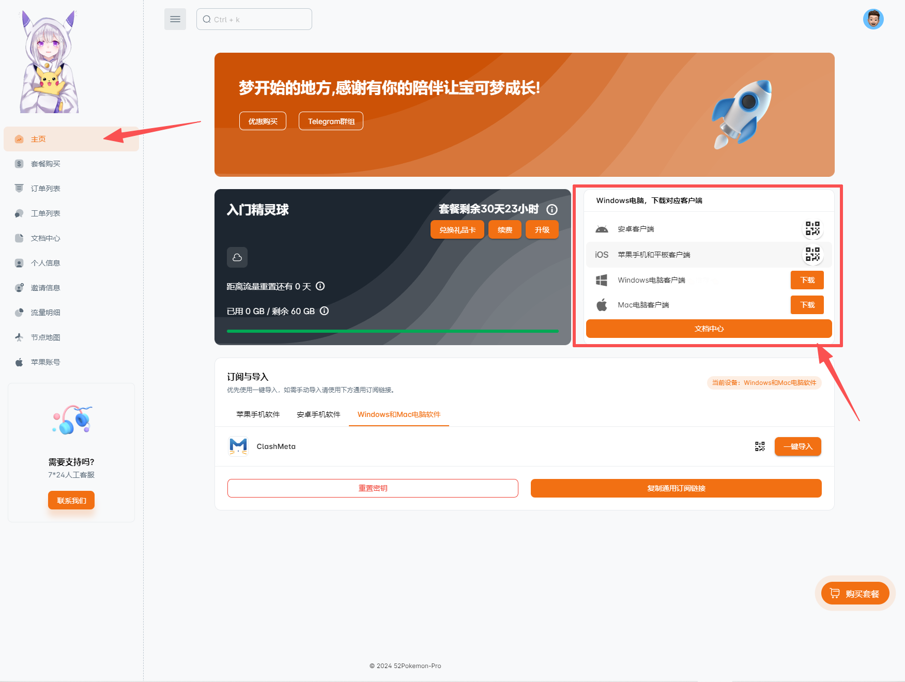
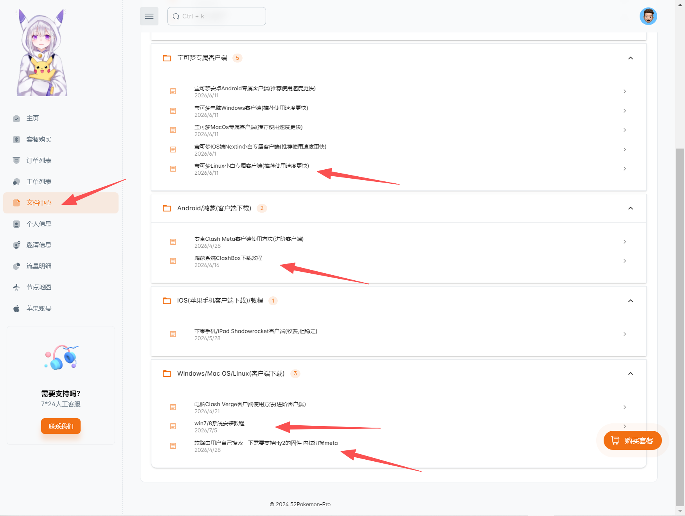
下载对应安装包，按安装程序提示完成安装，然后打开客户端并登录刚注册的账户。使用通用客户端时，按文档中心的说明导入订阅；订阅包含账户可用的节点列表。
选择节点
节点是客户端用于连接的服务器入口。点击主页的节点卡片，可以查看地区、线路类型、延迟和流量倍率。
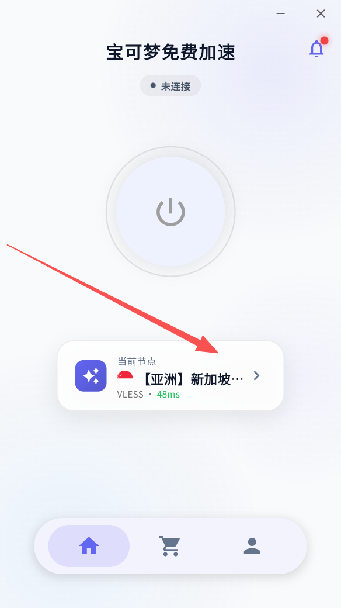
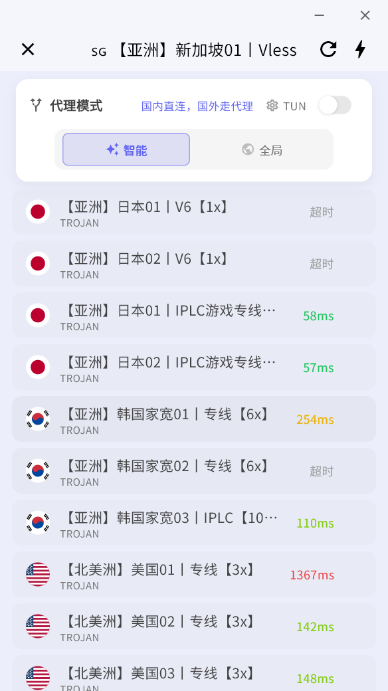
延迟常用毫秒（ms）表示，数值越小，往返等待通常越短。“1x”“2x”等表示服务商计算流量消耗的倍率，例如传输 1 GB 数据，2x 节点可能按 2 GB 扣除套餐流量。倍率不表示速度倍数。
| 节点名称 | 含义与选择方法 |
|---|---|
| 直连 | 客户端直接连接境外节点，通常不经过服务商另设的中转线路。访问表现与本地网络和跨境路由有关。 |
| V6 | 通过 IPv6 地址连接。当前网络支持 IPv6 时可以尝试；列表显示超时的节点不适合作为当前连接。 |
| 三网优化 | 服务商对电信、联通、移动线路的路由优化标记。可以与普通线路对比网页加载和连接稳定性。 |
| 专线 | 服务商提供的专用或优化传输线路，通常标注较高倍率。先用低倍率节点，遇到明显卡顿再比较。 |
| IPLC / 游戏专线 | IPLC 指国际私有租用线路；节点名中的“游戏专线”是服务商标签。此类节点可能采用较高流量倍率，普通网页学习通常无需优先选择。 |
| 家宽 | 表示出口地址被服务商标注为住宅网络地址。它描述出口类型，本身不表示速度更快，也不能代替网站要求的账户验证。 |
日常学习可以从 1x—3x 的低倍率节点中，选择延迟较低、能够稳定加载 Kaggle 的一个。支持 IPv6 时可尝试 V6，也可比较三网优化或低倍率专线。相同节点在不同网络和时段的表现可能不同，实际网页能否连续打开比名称更有用。
开启连接与断网处理
选好节点后，返回客户端主页，点击开关。显示“已连接”后，用浏览器重新打开 Kaggle 和注册页面。
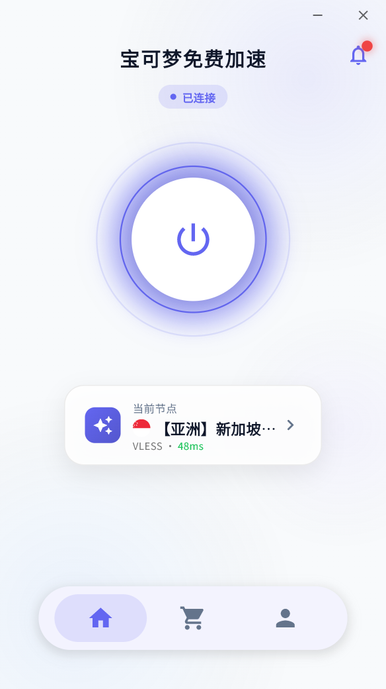
如果验证页面的部分资源仍无法加载，可以检查客户端的路由设置。“全局模式”会让更多流量经过代理；“TUN 模式”通过虚拟网卡处理流量。需要排查连接时可按客户端教程尝试，连接正常后恢复日常设置。
退出客户端或关机前，先断开连接。若下次开机后浏览器无法联网，而 QQ、微信等仍可使用，可能是系统代理仍指向未运行的客户端。重新打开客户端并关闭代理开关；在 Windows 中也可检查“设置 → 网络和 Internet → 代理”，关闭由该客户端留下的手动代理，再测试网页访问。
3. 注册 Google 账户（可选）
Google 账户可以用于登录 Kaggle 等学习平台，也方便使用其他 Google 服务。它不是注册 Kaggle 的必选条件：没有 Google 账户，可以直接使用自己的长期邮箱。
需要创建账户时，打开 Google 账户注册页，选择个人用途，填写基本信息并完成页面要求的验证。也可以使用已有的非 Gmail 邮箱创建 Google 账户，具体步骤见 Google 账户帮助。
绑定 Kaggle 的邮箱建议使用个人长期邮箱。部分学校邮箱收取外部验证码较慢，毕业后也可能停用；如果已经使用学校邮箱，需确认毕业后的邮箱保留方式。
4. 注册 Kaggle
打开 Kaggle 并点击 Register。已有 Google 账户可以选择对应登录方式，也可以点击 Register with Email 使用邮箱注册。
- 填写邮箱、密码、姓名和个人主页用户名。用户名会用于个人主页和 Notebook 链接。
- 完成页面显示的人机验证。如果验证区域始终空白，先检查网络，再刷新注册页。
- 点击 Next，按提示完成邮件验证及后续注册步骤。
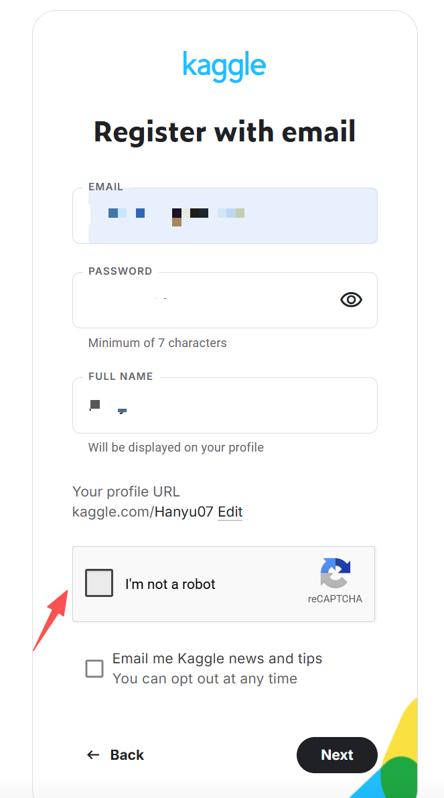
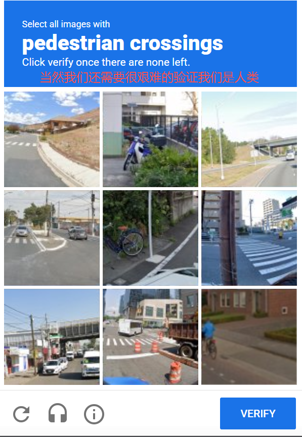
注册并登录后，可以看到个人主页，以及左侧的 Create、Datasets、Code 等入口。
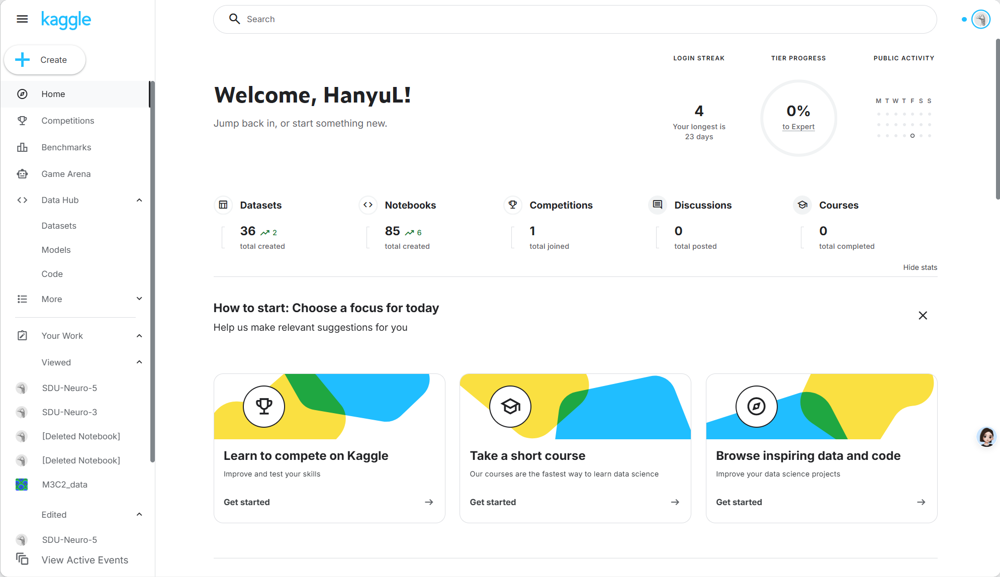
5. 创建一个代码项目
一个 Notebook 可以同时保存代码、解释文字和输出图片。它在 Kaggle 的计算环境中运行，浏览器负责编辑和查看结果，电脑本地无需另装 Python。
创建与运行
在主页左侧点击 Create → Notebook，创建一个空白代码项目。修改页面上方的标题，例如 my-first-notebook。
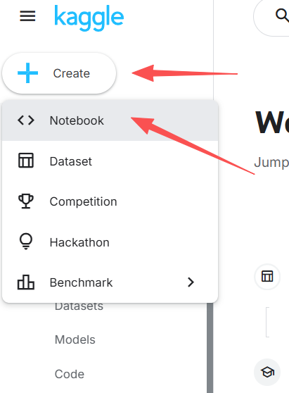
点击代码块左侧的三角按钮可以运行该块；顶部 Run All 会从上到下运行全部代码。下方的 + Code 添加代码块，+ Markdown 添加说明文字。右侧 Add Input 用于添加数据集，Output 区域查看程序生成的文件。
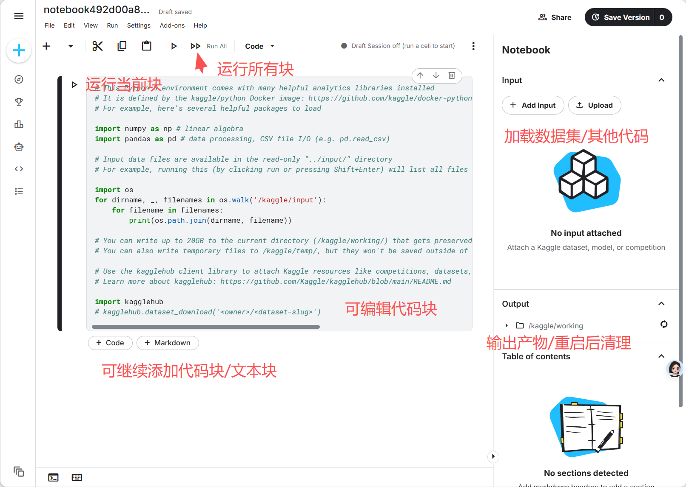
可以在一个代码块中输入下面两行，再点击运行。输出应为 样本数量： 12；把 12 改为其他数字并再次运行，结果会随之变化。
sample_count = 12
print("样本数量：", sample_count)后续课程提供了现成的项目 Notebook。打开项目后，点击 Copy & Edit 保存到自己的账户，再按单元格顺序修改和运行。出现“变量未定义”时，检查定义该变量的上方代码块是否已经运行。
选择显卡
打印文字、读取小表格等操作使用 CPU 即可。训练深度学习模型时，在右侧 Session options 或设置面板中找到 Accelerator，选择可用的 GPU。本网站的 PyTorch 实践优先选择 GPU T4 ×2。
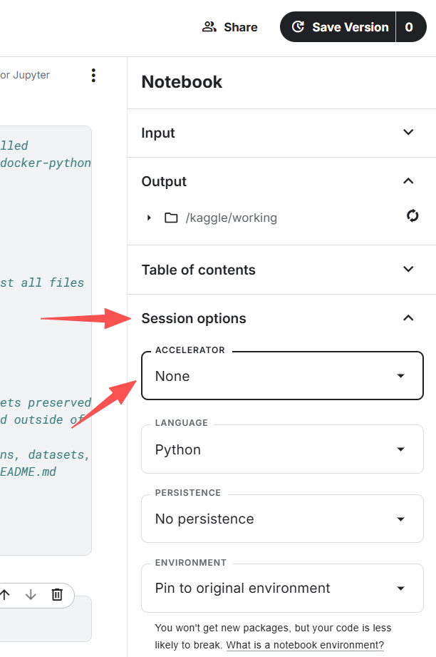
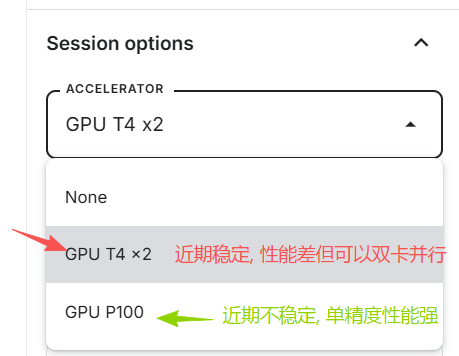
如果 GPU 选项不可用，检查账户设置中的 Phone verification，按提示绑定手机号并完成验证。验证过程中保持网络连接稳定；遇到验证码无法加载或提交失败时，先处理网络或页面提示的问题。
GPU 有每周使用额度，可在 Notebook 设置和会话管理页面查看剩余时长。完成练习后停止会话，避免空闲会话继续占用资源。额度用完时，仍可用 CPU 做轻量操作；账户额度的查看方法见 Kaggle GPU 使用说明。
保存代码与继续学习
点击右上角 Save Version 保存版本。需要从头运行并保存输出时，选择 Save & Run All；使用快速保存时，注意它不会重新执行全部代码。Notebook 界面功能可查阅 Kaggle 官方说明。
能够登录、创建 Notebook 并运行一个代码块后，基础环境就已准备完成。刚开始学习 Python 的同学可以阅读项目 00：AI Python 入门；已有基础的同学可以打开相应的实践体验项目。